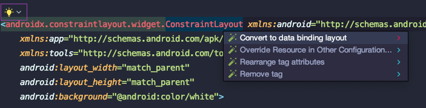

This practical codelab is part of the Flipp Android Engineer Onboarding course. Other codelabs that are part of the course are as follows:
- Working with Coroutines, Retrofit and Moshi
- Working with Room
Introduction
The Android operating system provides a strong foundation for building apps that rull well on a wide range of devices and form factors. However, issues like complex lifecycles and a lack of a recommended app architecture make it challenging to write robust apps. The Android Architecture Components provide libraries for common tasks such as lifecycle management and data persistence to make it easier to implement the recommended architecture.
What are the Architecture components?
Before we get into the nitty-gritty of how we work with the various components at Flipp, let us walk through a short overview of the Architecture Components and how they work together.
The diagram below shows a basic form of the recommended architecture for apps that use Architecture Components. The architecture consists of a UI controller, a ViewModel that serves LiveData, a Repository, and a Room database. The Room database is backed by an SQLite database and accessible through a data access object (DAO).

Architecture Components @ Flipp
We here at Flipp, have embraced this recommendation from Google on how to build a robust, testable and maintainable application using Architecture components.
All our activities and fragments represent the view layer. We have viewmodels that provide the necessary data to the UI and act as communication centers between the repository and the UI. We use the repository as a class that helps us manage multiple data sources, which in our case are the Room database and a remote data source like our Flipp backend (Maestro, BackFlipp, Accounts, etc).
We make use of Room, which is a database layer on top of SQLite that takes care of mundane taks that were previously part of a verbose helper class.
What you should already know
All the Android codelabs will be working with Kotlin, so familiarity with the language is recommended.
It helps to be familiar with:
- Software architectural patterns that separate data from the UI.
- The observer pattern. In summary, the observer pattern defines a one-to-many dependency between objects. Whenever an object changes its state, all the object's dependents are notified and updated automatically. The main object is called the "subject" and its dependents are called the "observers." Usually, the subject notifies the observers by calling one of the observers' methods. The subject knows what methods to call, because the observers are "registered" with the subject and specify the methods to call.
What you'll learn
How to work with the MVVM pattern, architecture components, databinding in the context of the Flipp application. You'll use ViewModel, LiveData, Databinding.
What you'll do
- Add a new feature to the Flipp app. The new feature is as follows: When an user is on a storefront (flyer page), they can know get more information about the store, by clicking on the new
infobutton on the toolbar. - The info button will launch the new
Activitythat we will build as part of this code lab. - Use a
ViewModelto separate all data operations from the UI. - Use
DataBindingto bind UI components in XML to data sources using a declarative format rather than programmatically, reducing boilerplate code.
In this practical you build a feature that uses the Android Architecture Components. The Store Info feature displays information like address, store hours, contact information, ratings, etc. This feature is basic, but sufficiently complete that we can use it as a template to build on.
The StoreInfo feature does the following:
- The
StoreInfoActivityworks withStoreInfoActivityViewModelto fetch and display store information to the user. - The
StoreInfoActivityViewModelfetches the required information from a web service using theRetrofitnetwork library in an upcoming code lab. - The fetched data will also be persisted for offline availability using a
Roomdatabase in an upcoming lab.
The screenshot below shows the Store Info feature.
StoreInfo feature architecture overview
This feature will be built using the architecture that was discussed in the first section of this codelab.
To help you get started with developing the Store Info feature, we are providing you with started code where a lot of the boiler plate work has been done. Checkout this branch to get started with the codelab. Let us take some time to review the given starter code.
StoreInfoActivity
A basic activity to display store information has been added to which you will be adding the required code in this codelab. Here is a snippet of what that activity looks like:
class StoreInfoActivity : AppCompatActivity() {
override fun onCreate(savedInstanceState: Bundle?) {
super.onCreate(savedInstanceState)
setContentView(R.layout.activity_store_info)
}
}
Changes to AndroidManifest
StoreInfoActivity has been added to the AndroidManifest's application tag to register it with our Flipp Application.
<activity android:name=".app.storeinfo.StoreInfoActivity"
android:screenOrientation="sensorPortrait" />
activity_store_info.xml
The required xml layout to render all the required information has been created for you. ConstraintLayout have been used to create this complex view.
strings.xml
All the required string resources have been added to the strings.xml file for your convenience.
<!-- CodeLab Strings -->
<string name="code_lab_store_hours">Store Hours</string>
<string name="code_lab_store_hours_sunday">Sunday</string>
<string name="code_lab_store_hours_monday">Monday</string>
<string name="code_lab_store_hours_tuesday">Tuesday</string>
<string name="code_lab_store_hours_wednesday">Wednesday</string>
<string name="code_lab_store_hours_thursday">Thursday</string>
<string name="code_lab_store_hours_friday">Friday</string>
<string name="code_lab_store_hours_saturday">Saturday</string>
<string name="code_lab_contact_info">Contact info</string>
<string name="code_lab_website">Website</string>
<string name="code_lab_reviews">Reviews</string>
<string name="code_lab_review_text">%1$f (%2$d Reviews)</string>
<string name="code_lab_store_info">View Store Info</string>
storefront_menu.xml
The entry point to this feature is from a menu option called View Store Info in the StorefrontCarouselActivity. This menu option has been added to the storefront_menu file.
<item
android:id="@+id/code_lab_store_info"
android:title="@string/code_lab_store_info"
app:showAsAction="never" />
StorefrontCarouselActivity
The code to start the StoreInfoActivity on click of the above defined menu option has been added for you in the StorefrontCarouselActivity. The onOptionsItemSelected() has been modified to account for the newly added menu option. Here is the code snippet that was added:
case R.id.code_lab_store_info:
startActivity(new Intent(this, StoreInfoActivity.class));
return true;
StoreInfo
A data class to store the necessary information that will be displayed has been created with the required data fields. We will build on this class to make it compatible with Retrofit and Room in the upcoming code labs.
data class StoreInfo(val storeName: String,
val storeAddress: String,
val storeHours: List<String>,
val storeContactNumber: String,
val storeWebsite: String,
val storeRating: Float,
val storeNumReviews: Int)
What's next
We will start to build this feature from our next step. First up, creating the Repository.

A Repository is a class that abstracts access to multiple data sources. The Repository is not part of the Architecture Components libraries, but is a suggested best practice and we at Flipp have embraced this pattern. It helps us provide a clean API to the rest of the app for app data. Additionally, it helps us unit test viewmodels effectively by providing the option to mock out the repository layer which in turn lets us mock the data sources.

Step 1
Create a class called StoreInfoRepository that extends InjectableHelper in the package com.wishabi.flipp.app.storeinfo. By extending InjectableHelper we make this class available to the ServiceManager which is an in-house built ServiceLocator.
class StoreInfoRepository : InjectableHelper() {}
Step 2
Add a member function called fetchStoreInfo() that accepts the arguments postalCode and storeName. Mark this function as a suspend function to make it available to coroutines. Let us look at what Coroutines are and how we use them at Flipp in an upcoming codelab, however, here is a quick blurb on what suspend means.
The keyword suspend is Kotlin's way of marking a function, or function type, available to coroutines. When a coroutine calls a function marked suspend, instead of blocking until that function returns like a normal function call, it suspends execution until the result is ready then it resumes where it left off with the result. While it's suspended waiting for a result, it unblocks the thread that it's running on so other functions or coroutines can run.
Let the fetchStoreInfo() function return an instance of StoreInfo that we will use in our StoreInfoActivity to display the required information to the user.
suspend fun fetchStoreInfo(postalCode: String, storeName: String): StoreInfo {
}
Step 3
For the purpose of this codelab, return a static StoreInfo object from the repository. We will look at how to connect our repository to a network service and a database in upcoming codelabs. Add a 3 second delay before you return StoreInfo to mock a real network or database operation.
suspend fun fetchStoreInfo(postalCode: String, storeName: String): StoreInfo {
delay(3_000)
return StoreInfo(storeName = "Flipp Store",
storeAddress = "3250 Bloor St W Unit 300, Etobicoke, ON M8X 2X9",
storeHours = getStoreHours(),
storeContactNumber = "+1 416-626-7092",
storeWebsite = "store.flipp.com",
storeNumReviews = 61,
storeRating = 4.5f)
}
Step 4
Add a private method getStoreHours(), that will return a list of static store hours.
private fun getStoreHours(): List<String> {
return mutableListOf("11AM - 6PM", "10AM - 8PM", "10AM - 8PM", "10AM - 8PM", "10AM - 8PM", "10AM - 8PM", "10AM - 9PM")
}
Here is the complete code for the StoreInfoRepository class:
class StoreInfoRepository : InjectableHelper() {
suspend fun fetchStoreInfo(postalCode: String, storeName: String): StoreInfo {
delay(3_000)
return StoreInfo(storeName = "Flipp Store",
storeAddress = "3250 Bloor St W Unit 300, Etobicoke, ON M8X 2X9",
storeHours = getStoreHours(),
storeContactNumber = "+1 416-626-7092",
storeWebsite = "store.flipp.com",
storeNumReviews = 61,
storeRating = 4.5f)
}
private fun getStoreHours(): List<String> {
return mutableListOf("11AM - 6PM", "10AM - 8PM", "10AM - 8PM", "10AM - 8PM", "10AM - 8PM", "10AM - 8PM", "10AM - 9PM")
}
}
We at Flipp, have been working with the MVVM pattern for a while now and have began to notice several common patterns in each screen:
- show initial loading indicator
- handle failure with an error screen or toast
- provide a meaningful empty state in absence of data
- display the final, loaded data It became apparent and necessary to implement a standard mechanism with whcih to model and display these states.
Our Solution
Modeling UI States with Sealed Classes
Sealed classes are used for representing restricted class hierarchies. As such, sealed classes are useful when modeling states within various app workflows. We've leveraged this to simplify the interaction between the activity and the viewmodel.
Step 1
Create a sealed class called StoreInfoViewState in the same package as the StoreInfoRepository, com.wishabi.flipp.app.storeinfo
sealed class StoreInfoViewState<out T>
Step 2
Create the following class hierarchy to represent different view states like Success, Loading and Error
data class Success<out T>(val value: T): StoreInfoViewState<T>()
data class Error(val errorMsg: String): StoreInfoViewState<Nothing>()
object Loading: StoreInfoViewState<Nothing>()
For view states that do not require to hold any data, like in the case of Loading, we can mark them as an object instead of as a class.
Here is the complete code for the StoreInfoViewState class.
sealed class StoreInfoViewState<out T>
data class Success<out T>(val value: T): StoreInfoViewState<T>()
data class Error(val errorMsg: String): StoreInfoViewState<Nothing>()
object Loading: StoreInfoViewState<Nothing>()

The ViewModel is a class whose role is to provide data to the UI and survive configuration changes. A viewmodel acts as a communication center between the repository (data layer) and the UI. At Flipp, we use the ViewModel to separate out the app's UI data from our Activities and Fragments to better follow the single responsibility principle, where we want our activities and fragments to be only responsible for drawing data to the screen, while our ViewModel is responsible for holding and processing all the data needed for the UI.
In the ViewModel, we use LiveData for changeable data that the UI will use or display.
Step 1
Create a class called StoreInfoViewModel that extends ViewModel in the package package com.wishabi.flipp.app.storeinfo.
class StoreInfoActivityViewModel : ViewModel() {}
Step 2
Modify the constructor to accept StoreInfoRepository as an argument.
class StoreInfoActivityViewModel(private val repository: StoreInfoRepository) : ViewModel() {}
Step 3
Add a private MutableLiveData member variable to hold the fetched StoreInfo object, which is wrapped in the above created StoreInforViewState UI state sealed class.
private var _storeInfo: MutableLiveData<StoreInfoViewState<StoreInfo>> = MutableLiveData()
Step 4
Add a public LiveData member variable that exposes the above MutableLiveData object, _storeInfo to our activity StoreInfoActivity.
val storeInfo: LiveData<StoreInfoViewState<StoreInfo>>
get() = _storeInfo
We follow the above practice of not exposing the MutableLiveData to the activity to prevent the view layer (Activity) from modifying data.
Step 5
Add two private String? member variables to to store postalCode and storeName.
private var postalCode: String? = null
private var storeName: String? = null
Step 6
Create a public fetchStoreInfo() method that accepts two arguments: postalCode: String and storeName: String.
fun fetchPostalCode(postalCode: String?, storeName: String?) {
}
Step 7
Modify the above created fetchStoreInfo() method to call the StoreInfoRepository's fetchStoreInfo() method to fetch the required StoreInfo.
fun fetchStoreInfo(postalCode: String?, storeName: String?) {
this.postalCode = postalCode
this.storeName = storeName
repository.fetchStoreInfo(postalCode, storeName)
}
Once you add the above code, you will notice that the IDE throws a compile time exception, indicating that a suspend function should only be called from a coroutine or another suspend function. To limit the scope of this codelab, copy paste the following piece of code that creates a coroutine and updates the MutableLiveData in our viewmodel.
fun fetchStoreInfo(postalCode: String?, storeName: String?) {
this.postalCode = postalCode
this.storeName = storeName
viewModelScope.launch {
try {
val storeInfo = repository.fetchStoreInfo(postalCode, storeName)
_storeInfo.postValue(Success(storeInfo))
} catch (e: Exception) {
_storeInfo.postValue(Error("There was an error fetching store information"))
}
}
}
The above code will make more sense when you complete the upcoming code lab on how to work with Coroutines.
Step 8
To prevent duplicate calls being made to the repository, add a check to see if the activity is requesting information for the same postal code and store name. Additionally, check whether the current value of the _storeInfo live data is of type Success.
fun fetchStoreInfo(postalCode: String?, storeName: String?) {
if (postalCode.isNullOrEmpty() || storeName.isNullOrEmpty()) {
_storeInfo.postValue(Error("Invalid postal code or store name"))
return
}
if (_storeInfo.value is Success
&& this.postalCode.equals(postalCode, ignoreCase = true)
&& this.storeName.equals(storeName, ignoreCase =
true)) {
return
}
this.postalCode = postalCode
this.storeName = storeName
viewModelScope.launch {
try {
val storeInfo = repository.fetchStoreInfo(postalCode, storeName)
_storeInfo.postValue(Success(storeInfo))
} catch (e: Exception) {
_storeInfo.postValue(Error("There was an error fetching store information"))
}
}
}
Step 9
To indicate to the activity that the request is in progress, we can make use of the Loading UI state. Modify the above method to first set the value of _storeInfo to a Loading object.
fun fetchStoreInfo(postalCode: String, storeName: String) {
if (postalCode.isNullOrEmpty() || storeName.isNullOrEmpty()) {
_storeInfo.postValue(Error("Invalid postal code or store name"))
return
}
if (_storeInfo.value is Success
&& this.postalCode.equals(postalCode, ignoreCase = true)
&& this.storeName.equals(storeName, ignoreCase =
true)) {
return
}
_storeInfo.postValue(Loading)
this.postalCode = postalCode
this.storeName = storeName
viewModelScope.launch {
try {
val storeInfo = repository.fetchStoreInfo(postalCode, storeName)
_storeInfo.postValue(Success(storeInfo))
} catch (e: Exception) {
_storeInfo.postValue(Error("There was an error fetching store information"))
}
}
}
Here is the complete code for the StoreInfoViewModel class.
class StoreInfoActivityViewModel(private val repository: StoreInfoRepository) : ViewModel() {
private var _storeInfo: MutableLiveData<StoreInfoViewState<StoreInfo>> = MutableLiveData()
val storeInfo: LiveData<StoreInfoViewState<StoreInfo>>
get() = _storeInfo
private var postalCode: String? = null
private var storeName: String? = null
fun fetchStoreInfo(postalCode: String, storeName: String) {
if (postalCode.isNullOrEmpty() || storeName.isNullOrEmpty()) {
_storeInfo.postValue(Error("Invalid postal code or store name"))
return
}
if (_storeInfo.value is Success
&& this.postalCode.equals(postalCode, ignoreCase = true)
&& this.storeName.equals(storeName, ignoreCase =
true)) {
return
}
_storeInfo.postValue(Loading)
this.postalCode = postalCode
this.storeName = storeName
viewModelScope.launch {
try {
val storeInfo = repository.fetchStoreInfo(postalCode, storeName)
_storeInfo.postValue(Success(storeInfo))
} catch (e: Exception) {
_storeInfo.postValue(Error("There was an error fetching store information"))
}
}
}
}
ViewModel depends on the StoreInfoRepository you need create a ViewModelFactory that will help creating the ViewModel when you request for it from the Activity.
Step 1
Create a new class StoreInfoViewModelFactory that extends ViewModelProvider.NewinstanceFactory in the package com.wishabi.flipp.app.storeinfo.
class StoreInfoViewModelFactory() : ViewModelProvider.NewInstanceFactory() {}
Step 2
Override the create() method that is provided by the NewInstanceFactory and add the following code in.
override fun <T : ViewModel?> create(modelClass: Class<T>): T {
val storeInfoRepository = ServiceManager.getService(StoreInfoRepository::class.java)
return when (modelClass) {
StoreInfoActivityViewModel::class.java -> {
StoreInfoActivityViewModel(storeInfoRepository) as T
}
else -> throw IllegalArgumentException("View Model not found")
}
}
The above code creates an instance of the StoreInfoRepository and injects it into the instance of the StoreInfoActivityViewModel that we create.
Now that you have created the all the necessary components to fetch the data, let us now connect these parts to the StoreInfoActivity to display the data. To display the data from the repository, you add an observer that observes the LiveData in the StoreInfoActivityViewModel. Whenever the data changes, the onChanged() callback of the LiveData is invoked.
Step 1
In StoreInfoActivity, create a member variable for the ViewModel, because all the activity's interactions are with the StoreInfoActivityViewModel only.
private val storeInfoActivityViewModel: StoreInfoActivityViewModel by lazy {
ViewModelProvider(this, StoreInfoViewModelFactory()).get(StoreInfoActivityViewModel::class.java)
}
Step 2
In the onCreate(), add an observer for the LiveDatastoreInfo present in the StoreInfoActivityViewModel. When the observed data changes while the activity is in the foreground, the onChanged() method is invoked and you can set the updated data to the UI widgets.
storeInfoActivityViewModel.storeInfo.observe(this, Observer { storeInfoViewState ->
storeInfoViewState?.let {
when(it) {
is Success -> updateUI(it)
is Error -> showError(it)
is Loading -> showLoading()
}
}
})
Step 3
Add a private function updateUI() in the StoreInfoActivity, that accepts an instance of Success<StoreInfo> view state and sets the required values to the UI widgets based on the data that we receive from the ViewModel.
private fun updateUI(data: Success<StoreInfo>) {
store_info_progress_bar.visibility = View.GONE
val storeInfo = data.value
store_name_text_view.text = storeInfo.storeName
store_address_text_view.text = storeInfo.storeAddress
store_hours_sunday_text_view.text = storeInfo.storeHours[0]
store_hours_monday_text_view.text = storeInfo.storeHours[1]
store_hours_tuesday_text_view.text = storeInfo.storeHours[2]
store_hours_wednesday_text_view.text = storeInfo.storeHours[3]
store_hours_thursday_text_view.text = storeInfo.storeHours[4]
store_hours_friday_text_view.text = storeInfo.storeHours[5]
store_hours_saturday_text_view.text = storeInfo.storeHours[6]
store_contact_info_text_view.text = storeInfo.storeContactNumber
store_website_text_view.text = storeInfo.storeWebsite
store_rating_bar.rating = storeInfo.storeRating
store_rating_text_view.text = getString(R.string.code_lab_review_text, storeInfo.storeRating, storeInfo.storeNumReviews)
}
Step 4
Add a private function showError() in the StoreInfoActivity, that accepts an instance of Error view state and displays a toast message to the user.
private fun showError(error: Error) {
store_info_progress_bar.visibility = View.GONE
Toast.makeText(this, error.errorMsg, Toast.LENGTH_LONG).show()
}
Step 5
Add a private function showLoading() in the StoreInfoActivity, that sets the visibility of the ProgressBar with id store_info_progress_bar to View.VISIBLE.
private fun showLoading() {
store_info_progress_bar.visibility = View.VISIBLE
}
Step 6
Make sure to set the visibility of the above mentioned ProgressBar to View.GONE in both the updateUI() and showError() methods.
Step 7
The final step is to call the fetchStoreInfo() method in the ViewModel. You can use the storeName and postalCode that you receive as part of the Intent bundle that was used to start this Activity. Add the following code to the onCreate() method to read postalCode and storeName from the intent bundle. You can use the declared constants PARAM_POSTAL_CODE and PARAM_STORE_NAME as keys when requesting the values from the intent. Finally, call the method in the viewmodel to fetch the data. Your onCreate() method should look something like this after making all these changes.
override fun onCreate(savedInstanceState: Bundle?) {
super.onCreate(savedInstanceState)
setContentView(R.layout.activity_store_info)
val storeName = intent.getStringExtra(PARAM_STORE_NAME)
val postalCode = intent.getStringExtra(PARAM_POSTAL_CODE)
storeInfoActivityViewModel.storeInfo.observe(this, Observer { storeInfoViewState ->
storeInfoViewState?.let {
when(it) {
is Success -> updateUI(it)
is Error -> showError(it)
is Loading -> showLoading()
}
}
})
storeInfoActivityViewModel.fetchStoreInfo(postalCode, storeName)
}
Here is the complete code for the StoreInfoActivity class.
class StoreInfoActivity : AppCompatActivity() {
companion object {
public const val PARAM_STORE_NAME = "param_store_name"
public const val PARAM_POSTAL_CODE = "postal_code"
}
private val storeInfoActivityViewModel: StoreInfoActivityViewModel by lazy {
ViewModelProvider(this, StoreInfoViewModelFactory()).get(StoreInfoActivityViewModel::class.java)
}
override fun onCreate(savedInstanceState: Bundle?) {
super.onCreate(savedInstanceState)
setContentView(R.layout.activity_store_info)
val storeName = intent.getStringExtra(PARAM_STORE_NAME)
val postalCode = intent.getStringExtra(PARAM_POSTAL_CODE)
storeInfoActivityViewModel.storeInfo.observe(this, Observer { storeInfoViewState ->
storeInfoViewState?.let {
when(it) {
is Success -> updateUI(it)
is Error -> showError(it)
is Loading -> showLoading()
}
}
})
storeInfoActivityViewModel.fetchStoreInfo(postalCode, storeName)
}
private fun showLoading() {
store_info_progress_bar.visibility = View.VISIBLE
}
private fun showError(error: Error) {
store_info_progress_bar.visibility = View.GONE
Toast.makeText(this, error.errorMsg, Toast.LENGTH_LONG).show()
}
private fun updateUI(data: Success<StoreInfo>) {
store_info_progress_bar.visibility = View.GONE
val storeInfo = data.value
store_name_text_view.text = storeInfo.storeName
store_address_text_view.text = storeInfo.storeAddress
store_hours_sunday_text_view.text = storeInfo.storeHours[0]
store_hours_monday_text_view.text = storeInfo.storeHours[1]
store_hours_tuesday_text_view.text = storeInfo.storeHours[2]
store_hours_wednesday_text_view.text = storeInfo.storeHours[3]
store_hours_thursday_text_view.text = storeInfo.storeHours[4]
store_hours_friday_text_view.text = storeInfo.storeHours[5]
store_hours_saturday_text_view.text = storeInfo.storeHours[6]
store_contact_info_text_view.text = storeInfo.storeContactNumber
store_website_text_view.text = storeInfo.storeWebsite
store_rating_bar.rating = storeInfo.storeRating
store_rating_text_view.text = getString(R.string.code_lab_review_text, storeInfo.storeRating, storeInfo.storeNumReviews)
}
}
Now that you have all the components working together, let us look at how Databinding can help to clean up your UI code.
Step 1
Data Binding has already been enabled on the Flipp Project. Let us convert our view activity_store_info.xml to support data binding. Open activity_store_info.xml. It is a regular layout with a ConstraintLayout as the root element.
In order to convert the layout to Data Binding, you need to wrap the root element in a tag. You'll also have to move the namespace definitions (the attributes that start with xmlns:) to the new root element.
Android Studio offers a handy way to do this automatically: Right-click the root element, select Show Context Actions, then Convert to data binding layout: 
Your layout should now look like this:
<?xml version="1.0" encoding="utf-8"?>
<!-- Copyright (c) 2020 Wishabi. All rights reserved. -->
<layout xmlns:android="http://schemas.android.com/apk/res/android"
xmlns:app="http://schemas.android.com/apk/res-auto"
xmlns:tools="http://schemas.android.com/tools">
<data>
</data>
<androidx.constraintlayout.widget.ConstraintLayout
android:layout_width="match_parent"
android:layout_height="match_parent"
android:background="@android:color/white">
<androidx.constraintlayout.widget.Guideline
android:id="@+id/start_guideline"
android:layout_width="wrap_content"
android:layout_height="wrap_content"
android:orientation="vertical"
app:layout_constraintGuide_begin="@dimen/dimen_16dp" />
The <data> tag will contain layout variables.
Layout variables are used to write layout expressions. Layout expressions are placed in the value of element attributes and they use the @{expression} format. Here are some examples:
android:text="@{String.valueOf(index + 1)}"
android:visibility="@{age < 13 ? View.GONE : View.VISIBLE}"
android:transitionName='@{"image_" + id}'
Some of the advantages that we noticed by using layout expressions to bind components in the layout file are:
- Help prevent memory leaks and null pointer exceptions
- Streamline our activity's code by removing UI framework calls
Now, let's modify your StoreInfoActivityViewModel to work with databinding.
Step 1
Open StoreInfoActivityViewModel and add the following LiveData fields to allow binding to the different UI elements.
var storeNameLiveData = MutableLiveData("")
var storeAddressLiveData = MutableLiveData("")
var sundayStoreHoursLiveData = MutableLiveData("")
var mondayStoreHoursLiveData = MutableLiveData("")
var tuesdayStoreHoursLiveData = MutableLiveData("")
var wednesdayStoreHoursLiveData = MutableLiveData("")
var thursdayStoreHoursLiveData = MutableLiveData("")
var fridayStoreHoursLiveData = MutableLiveData("")
var saturdayStoreHoursLiveData = MutableLiveData("")
var storeContactNumberLiveData = MutableLiveData("")
var storeWebsiteLiveData = MutableLiveData("")
var storeRatingLiveData = MutableLiveData(0f)
var storeNumReviewsLiveData = MutableLiveData(0)
var loadingLiveData = MutableLiveData(true)
Step 2
Modify the fetchStoreInfo() method to update the above declared LiveData variables.
fun fetchStoreInfo(postalCode: String?, storeName: String?) {
if (postalCode.isNullOrEmpty() || storeName.isNullOrEmpty()) {
_storeInfo.postValue(Error("Invalid postal code or store name"))
return
}
if (_storeInfo.value is Success
&& this.postalCode.equals(postalCode, ignoreCase = true)
&& this.storeName.equals(storeName, ignoreCase =
true)) {
return
}
loadingLiveData.postValue(true)
this.postalCode = postalCode
this.storeName = storeName
viewModelScope.launch {
try {
val storeInfo = repository.fetchStoreInfo(postalCode, storeName)
storeNameLiveData.postValue(storeInfo.storeName)
storeAddressLiveData.postValue(storeInfo.storeAddress)
sundayStoreHoursLiveData.postValue(storeInfo.storeHours[0])
mondayStoreHoursLiveData.postValue(storeInfo.storeHours[1])
tuesdayStoreHoursLiveData.postValue(storeInfo.storeHours[2])
wednesdayStoreHoursLiveData.postValue(storeInfo.storeHours[3])
thursdayStoreHoursLiveData.postValue(storeInfo.storeHours[4])
fridayStoreHoursLiveData.postValue(storeInfo.storeHours[5])
saturdayStoreHoursLiveData.postValue(storeInfo.storeHours[6])
storeWebsiteLiveData.postValue(storeInfo.storeWebsite)
storeContactNumberLiveData.postValue(storeInfo.storeContactNumber)
storeRatingLiveData.postValue(storeInfo.storeRating)
storeNumReviewsLiveData.postValue(storeInfo.storeNumReviews)
loadingLiveData.postValue(false)
} catch (e: Exception) {
_storeInfo.postValue(Error("There was an error fetching store information"))
loadingLiveData.postValue(false)
}
}
}
Let's start with binding our ViewModel.
Step 1
Create a variable to hold our StoreInfoActivityViewModel inside the <data> tag.
<data>
<variable name="storeInfoActivityViewModel"
type="com.wishabi.flipp.app.storeinfo.StoreInfoActivityViewModel" />
</data>
Step 2
Look for the TextView with ID store_name_text_view and add the android:text attribute with a layout expression:
<TextView
android:id="@+id/store_name_text_view"
style="@style/Flipp.Typography.Title"
android:layout_width="wrap_content"
android:layout_height="wrap_content"
android:text="@{storeInfoActivityViewModel.storeNameLiveData}"
android:textColor="@color/primary3"
app:layout_constraintStart_toStartOf="@+id/start_guideline"
app:layout_constraintTop_toTopOf="@+id/top_guideline"
tools:text="Flipp Store" />
Step 3
Look for the TextView with ID store_address_text_view and add the android:text attribute with a layout expression:
<TextView
android:id="@+id/store_address_text_view"
style="@style/Flipp.Typography.SubHeader"
android:layout_width="wrap_content"
android:layout_height="wrap_content"
android:text="@{storeInfoActivityViewModel.storeAddressLiveData}"
android:layout_marginTop="8dp"
android:maxLines="2"
android:textColor="@color/default3"
app:layout_constraintStart_toStartOf="@+id/start_guideline"
app:layout_constraintTop_toBottomOf="@+id/store_name_text_view"
tools:text="300 North St \nBuffalo, New York, 10001" />
Step 4
Look for the TextView with ID store_hours_sunday_text_view and add the android:text attribute with a layout expression:
<TextView
android:id="@+id/store_hours_sunday_text_view"
android:layout_width="wrap_content"
android:layout_height="wrap_content"
android:text="@{storeInfoActivityViewModel.sundayStoreHoursLiveData}"
android:layout_marginStart="@dimen/dimen_16dp"
android:layout_marginTop="@dimen/dimen_8dp"
app:layout_constraintStart_toEndOf="@+id/store_hours_title_barrier"
app:layout_constraintTop_toBottomOf="@+id/store_hours_title_text_view"
tools:text="11AM - 6PM" />
Repeat the same for the following IDs store_hours_monday_text_view, store_hours_tuesday_text_view, store_hours_wednesday_text_view, store_hours_thursday_text_view, store_hours_friday_text_view and store_hours_saturday_text_view and bind them to the appropriate LiveData members in the ViewModel.
Here is how the above TextViews will look like after these changes are done:
<TextView
android:id="@+id/store_hours_sunday_text_view"
android:layout_width="wrap_content"
android:layout_height="wrap_content"
android:text="@{storeInfoActivityViewModel.sundayStoreHoursLiveData}"
android:layout_marginStart="@dimen/dimen_16dp"
android:layout_marginTop="@dimen/dimen_8dp"
app:layout_constraintStart_toEndOf="@+id/store_hours_title_barrier"
app:layout_constraintTop_toBottomOf="@+id/store_hours_title_text_view"
tools:text="11AM - 6PM" />
<TextView
android:id="@+id/store_hours_monday_text_view"
android:layout_width="wrap_content"
android:layout_height="wrap_content"
android:text="@{storeInfoActivityViewModel.mondayStoreHoursLiveData}"
android:layout_marginStart="@dimen/dimen_16dp"
android:layout_marginTop="@dimen/dimen_4dp"
app:layout_constraintStart_toEndOf="@+id/store_hours_title_barrier"
app:layout_constraintTop_toBottomOf="@+id/store_hours_sunday_text_view"
tools:text="10AM - 9PM" />
<TextView
android:id="@+id/store_hours_tuesday_text_view"
android:layout_width="wrap_content"
android:layout_height="wrap_content"
android:text="@{storeInfoActivityViewModel.tuesdayStoreHoursLiveData}"
android:layout_marginStart="@dimen/dimen_16dp"
android:layout_marginTop="@dimen/dimen_4dp"
app:layout_constraintStart_toEndOf="@+id/store_hours_title_barrier"
app:layout_constraintTop_toBottomOf="@+id/store_hours_monday_text_view"
tools:text="10AM - 9PM" />
<TextView
android:id="@+id/store_hours_wednesday_text_view"
android:layout_width="wrap_content"
android:layout_height="wrap_content"
android:text="@{storeInfoActivityViewModel.wednesdayStoreHoursLiveData}"
android:layout_marginStart="@dimen/dimen_16dp"
android:layout_marginTop="@dimen/dimen_4dp"
app:layout_constraintStart_toEndOf="@+id/store_hours_title_barrier"
app:layout_constraintTop_toBottomOf="@+id/store_hours_tuesday_text_view"
tools:text="10AM - 9PM" />
<TextView
android:id="@+id/store_hours_thursday_text_view"
android:layout_width="wrap_content"
android:layout_height="wrap_content"
android:text="@{storeInfoActivityViewModel.thursdayStoreHoursLiveData}"
android:layout_marginStart="@dimen/dimen_16dp"
android:layout_marginTop="@dimen/dimen_4dp"
app:layout_constraintStart_toEndOf="@+id/store_hours_title_barrier"
app:layout_constraintTop_toBottomOf="@+id/store_hours_wednesday_text_view"
tools:text="10AM - 9PM" />
<TextView
android:id="@+id/store_hours_friday_text_view"
android:layout_width="wrap_content"
android:layout_height="wrap_content"
android:text="@{storeInfoActivityViewModel.fridayStoreHoursLiveData}"
android:layout_marginStart="@dimen/dimen_16dp"
android:layout_marginTop="@dimen/dimen_4dp"
app:layout_constraintStart_toEndOf="@+id/store_hours_title_barrier"
app:layout_constraintTop_toBottomOf="@+id/store_hours_thursday_text_view"
tools:text="10AM - 9PM" />
<TextView
android:id="@+id/store_hours_saturday_text_view"
android:layout_width="wrap_content"
android:layout_height="wrap_content"
android:text="@{storeInfoActivityViewModel.saturdayStoreHoursLiveData}"
android:layout_marginStart="@dimen/dimen_16dp"
android:layout_marginTop="@dimen/dimen_4dp"
app:layout_constraintStart_toEndOf="@+id/store_hours_title_barrier"
app:layout_constraintTop_toBottomOf="@+id/store_hours_friday_text_view"
tools:text="11AM - 6PM" />
Step 5
Look for the TextView with ID store_contact_info_text_view and add the android:text attribute with a layout expression:
<TextView
android:id="@+id/store_contact_info_text_view"
android:layout_width="0dp"
android:layout_height="wrap_content"
android:text="@{storeInfoActivityViewModel.storeContactNumberLiveData}"
android:layout_marginTop="@dimen/dimen_8dp"
app:layout_constraintEnd_toStartOf="@+id/store_contact_info_guide_line"
app:layout_constraintStart_toStartOf="@+id/start_guideline"
app:layout_constraintTop_toBottomOf="@+id/store_contact_info_title_text_view"
tools:text="+1 404-456-7890" />
Step 6
Look for the TextView with ID store_webstie_text_view and add the android:text attribute with a layout expression:
<TextView
android:id="@+id/store_website_text_view"
android:layout_width="0dp"
android:layout_height="wrap_content"
android:text="@{storeInfoActivityViewModel.storeWebsiteLiveData}"
android:layout_marginStart="@dimen/dimen_8dp"
android:layout_marginTop="@dimen/dimen_8dp"
android:maxLines="2"
app:layout_constraintEnd_toStartOf="@+id/end_guideline"
app:layout_constraintStart_toEndOf="@+id/store_contact_info_text_view"
app:layout_constraintTop_toBottomOf="@+id/store_website_title_text_view"
tools:text="store.flipp.com" />
Step 7
Look for the RatingBar with ID store_rating_bar and add the android:rating attribute with a layout expression:
<RatingBar
android:id="@+id/store_rating_bar"
android:layout_width="wrap_content"
android:layout_height="wrap_content"
android:rating="@{storeInfoActivityViewModel.storeRatingLiveData}"
android:progressTint="@color/primary3"
android:layout_marginTop="@dimen/dimen_8dp"
android:isIndicator="true"
android:numStars="5"
android:stepSize="0.5"
app:layout_constraintStart_toStartOf="@+id/start_guideline"
app:layout_constraintTop_toBottomOf="@+id/store_reviews_title_text_view" />
Step 8
Look for the TextView with ID store_rating_text_view and add the android:text attribute with a layout expression:
<TextView
android:id="@+id/store_rating_text_view"
android:layout_width="wrap_content"
android:layout_height="wrap_content"
android:text="@{String.format(@string/code_lab_review_text, storeInfoActivityViewModel.storeRatingLiveData, storeInfoActivityViewModel.storeNumReviewsLiveData)}"
android:layout_marginStart="4dp"
android:layout_marginTop="@dimen/dimen_4dp"
tools:text="4.3 (120 Reviews)"
app:layout_constraintStart_toStartOf="@+id/start_guideline"
app:layout_constraintTop_toBottomOf="@+id/store_rating_bar" />
Step 9
Finally, look for the ProgressBar with ID store_info_progress_bar and modify the android:visibility attribute with a layout expression:
<ProgressBar
android:id="@+id/store_info_progress_bar"
style="?android:attr/progressBarStyle"
android:layout_width="wrap_content"
android:layout_height="wrap_content"
android:visibility="@{storeInfoActivityViewModel.loadingLiveData ? View.VISIBLE : View.GONE}"
tools:visibility="visible"
app:layout_constraintStart_toEndOf="@id/start_guideline"
app:layout_constraintEnd_toStartOf="@id/end_guideline"
app:layout_constraintTop_toBottomOf="@id/top_guideline"
app:layout_constraintBottom_toTopOf="@id/bottom_guideline" />
However, this will cause a compile time exception with respect to the View class. To fix this, import the View class in the <data> section as given below:
<data>
<import type="android.view.View" />
<variable name="storeInfoActivityViewModel"
type="com.wishabi.flipp.app.storeinfo.StoreInfoActivityViewModel" />
</data>
Step 1
The layout is ready, but now it's necessary to make some changes in the activity. Open StoreInfoActivity. Because you're using a Data Binding layout, the inflation is done in a different way.
In onCreate, replace:
setContentView(R.layout.activity_store_info)
with
val binding: ActivityStoreInfoBinding =
DataBindingUtil.setContentView(this, R.layout.activity_store_info)
Step 2
Now you can set the data binding variable values in the activity:
binding.lifecycleOwner = this
binding.storeInfoActivityViewModel = storeInfoActivityViewModel
``` <br/>
And that's it. You bound data using the library.
### Step 3
Remove the methods that set the data to the UI widgets and displays a progress bar to indicate loading status as we have now bound the widgets directly to the `ViewModel` keeping only the flow to display a toast in the case of an `Error`.
Here is the complete code for the `StoreInfoActivity` with these code changes:<br/>
```kotlin
class StoreInfoActivity : AppCompatActivity() {
companion object {
const val PARAM_STORE_NAME = "param_store_name"
const val PARAM_POSTAL_CODE = "postal_code"
}
private val storeInfoActivityViewModel: StoreInfoActivityViewModel by lazy {
ViewModelProvider(this, StoreInfoViewModelFactory()).get(StoreInfoActivityViewModel::class.java)
}
override fun onCreate(savedInstanceState: Bundle?) {
super.onCreate(savedInstanceState)
val binding: ActivityStoreInfoBinding =
DataBindingUtil.setContentView(this, R.layout.activity_store_info)
binding.lifecycleOwner = this
binding.storeInfoActivityViewModel = storeInfoActivityViewModel
val storeName = intent.getStringExtra(PARAM_STORE_NAME)
val postalCode = intent.getStringExtra(PARAM_POSTAL_CODE)
storeInfoActivityViewModel.storeInfo.observe(this, Observer { storeInfoViewState ->
storeInfoViewState?.let {
when(it) {
is Error -> showError(it)
}
}
})
storeInfoActivityViewModel.fetchStoreInfo(postalCode, storeName)
}
private fun showError(error: Error) {
store_info_progress_bar.visibility = View.GONE
Toast.makeText(this, error.errorMsg, Toast.LENGTH_LONG).show()
}
}
The final solution for this codelab can be found here.
Here is some Android developer documentation to help learn more: